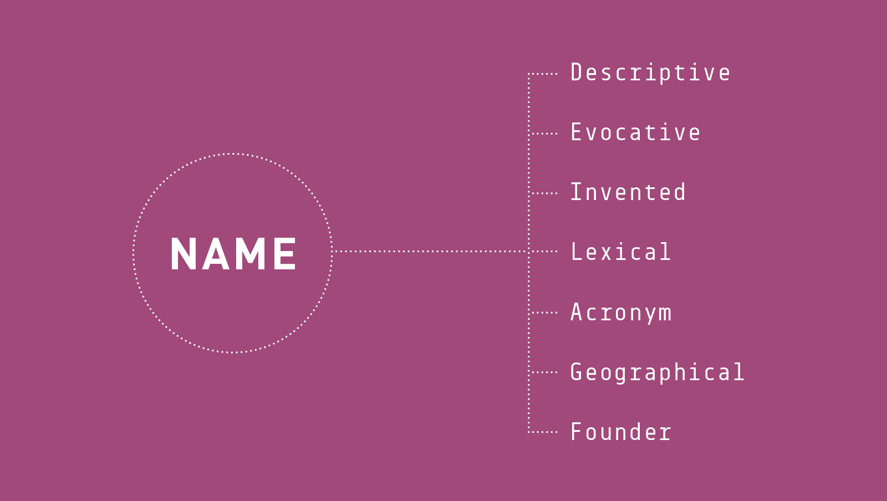
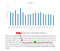

Acronym Brand Names advantage


You may already know that there are 7 types of brand names but let’s just remind them ourselves. they are
- Descriptive
- Evocative
- Invented
- Lexical
- Acronymic
- Geographical
- Founder
You can find an extensive explanation about the brand names here. Thought that it was interesting to highlight this picture below

and to notify you that when in books and textual content Acronomic brand names have one advantage over other types because we almost write them in all caps. If it happens that we are listing companies these names are the ones that got the most exposure because they just are capitalized. Our eyes got them first and more likely our mind and memory also. This is just a key insight shared for you to acknowledge or learn. As you have read this you are also more likely to remind yourself about it in the future if you will be reading a sentence that includes a listing of companies. like this one below
it is just normal cognitive behavior, you are not manipulated just reminded.